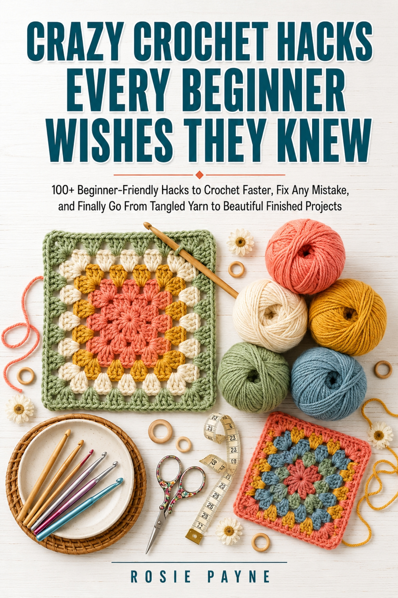
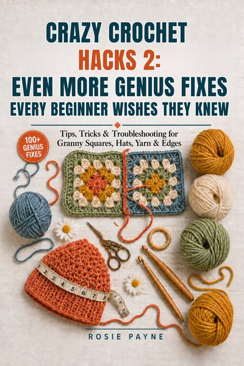

Finished measurements for the projects people make most — and the gauge math that turns each one into your own stitch and row count.
A finished measurement is useless on its own. Your gauge is what converts inches into stitches, and it is personal to your hands, hook and yarn.
| Project | Finished size | What the number is doing |
|---|---|---|
| Eyeglass case | 6.5 × 2.5 in | Fits most standard adult frames. Build in ½ inch of ease so lenses slide in without being forced against the sides. |
| Mug rug | 5 × 7 in | Holds a standard mug with room for a spoon beside it. Check row count before starting the border so a set stays matched. |
| Potholder | 7 × 7 in | Safe minimum for real kitchen use, worked double thickness. Thinner than this transfers heat straight through. |
| Dishcloth | 8 × 8 in | Cotton only. Under 7 inches it slips out of a wet hand; over 9 it bunches and stays damp. Acrylic barely absorbs. |
| Headband | head − 2 in | Negative ease is the whole point. Worked to your actual measurement it slides off within an hour. |
| Beanie, adult | 20–21 in round | About 2 inches of negative ease against an average adult head, so it grips instead of riding up. |
| Scarf | 56 in + fringe | Stop the crocheted body at 56 inches and let 6-inch fringe bring it to 60–62. Keep the width at 8 inches to wrap once without bulk. |
| Market bag | 14 w × 16 d | Carries a full shop and sits at hip height on the strap. Cotton — acrylic stretches permanently under weight. |
| Pillow cover | insert − 1 in | 17 × 17 inches for an 18-inch insert. Crochet stretches once stuffed, so a same-size cover always sags. |
| Baby blanket, crib | 30 × 36 in | Covers a crib mattress with no loose excess. Keep the stitch tight enough that no gap is wider than a fingertip. |
| Lap blanket | 36 × 48 in | 48 granny squares at 6 inches each — 6 across, 8 down. Add a row if your squares run small. |
| Throw blanket | 50 × 60 in | Roughly 2,000 yards, or 6–8 standard skeins. Buy them together in one dye lot before you start. |
| Granny square | ≈ 20 yd each | For a 6-inch worsted square. Weigh one finished square and divide the skein weight by it for your own exact figure. |
Per round: 6 for single crochet, 8 for half double, 12 for double. Fewer and the circle cups upward; more and the edge ruffles.
Three stitches into every corner so it can turn, one stitch per row along the sides so the edge matches the fabric's own row height.
Hats, headbands and cuffs are worked smaller than the body part they sit on. The stretch is what holds them in place.
An 8-inch dishcloth, in cotton, at a gauge of 3.5 stitches per inch:
Then work until the piece measures 8 inches tall, or 28 rows if your row gauge also came out at 3.5. The chart gives you the target; your swatch gives you the count.
I learned to crochet from free patterns, and I finished a lot of things that didn't fit. A hat that slid off. A blanket that ran out of yarn four rows from the end. A glasses case my mother couldn't actually get her glasses into.
None of those were skill problems. They were measurement problems — and nobody had written the measurements down in one place. So I started writing them down.

This chart tells you what size to aim for. It doesn't tell you what to do when your gauge refuses to match the pattern no matter which hook you try, how to rescue a dropped stitch six rows down without frogging the lot, or why your foundation chain fights you every single time.
That is what the book is for — 100+ fixes for the things that go wrong between casting on and finishing, including the full yardage and gauge tables these numbers were pulled from.
Book 1 of the Crazy Crochet Hacks series.
